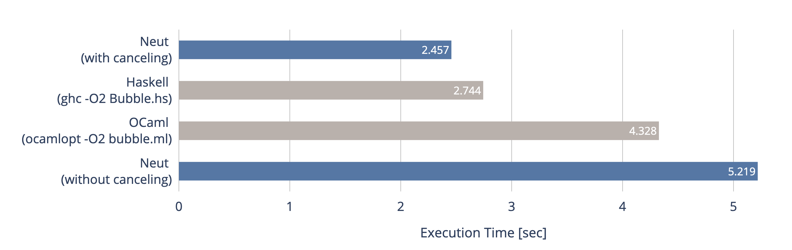

Allocation Canceling
Thanks to its static nature, memory allocation in Neut can sometimes be optimized away. Consider the following code:
data int-list {
- Nil
- Cons(int, int-list)
}
// [1, 5, 9] => [2, 6, 10]
define increment(xs: int-list): int-list {
match xs {
- Nil =>
Nil
// ↓ the `Cons` clause
- Cons(x, rest) =>
Cons(add-int(x, 1), increment(rest))
}
}
The expected behavior of the Cons clause above would be something like the below:
- obtain
xandrestfromxs freethe outer tuple ofxs- calculate
add-int(x, 1)andincrement(rest) - allocate memory region using
mallocto return the result - store the calculated values to the pointer and return it
However, since the size of Cons(x, rest) and Cons(add-int(x, 1), increment(rest)) are known to be the same at compile-time, the pair of free and malloc should be able to be optimized away, as follows:
- obtain
xandrestfromxs - calculate
add-int(x, 1)andincrement(rest) - store the calculated values to
xs(overwrite)
And Neut does this optimization. When a free is required, Neut looks for a malloc that has the same size and optimizes away such a pair if there exists one. The resulting assembly code thus performs in-place updates.
Allocation Canceling and Branching
This optimization "penetrates" branching. For example, consider the below:
// (an `insert` function in bubble sort)
define insert(v: int, xs: int-list): int-list {
match xs {
- Nil =>
// ...
- Cons(y, ys) => // (X)
if gt-int(v, y) {
Cons(y, insert(v, ys)) // (Y)
} else {
Cons(v, Cons(y, ys)) // (Z)
}
}
}
At point (X), free against xs is required. However, this free can be canceled, since mallocs of the same size can be found in all the possible branches (here, (Y) and (Z)). Thus, in the code above, the deallocation of xs at (X) is removed, and the memory region of xs is reused at (Y) and (Z), resulting in an in-place update of xs.
On the other hand, consider rewriting the code above into something like the below:
define foo(v: int, xs: int-list): int-list {
match xs {
- Nil =>
// ...
- Cons(y, ys) => // (X')
if gt-int(v, y) {
Nil // (Y')
} else {
Cons(v, Cons(y, ys)) // (Z')
}
}
}
At this time, the free against xs at (X') can't be optimized away, since there exists a branch (namely, (Y')) that doesn't perform malloc which is of the same size as xs.
How Effective Is This Optimization?
The performance benefit obtained by this optimization seems to be pretty significant, at least on my machine. It feels somewhat like tail call optimization. Let me share some numbers.
A Slower Implementation
Let's write a slower implementation for comparison. The allocation canceling can be disabled by defining an opaque function like the below:
define insert(v: int, xs: int-list): int-list {
match xs {
- Nil =>
// ...
- Cons(y, ys) => // (X'')
swap-gt(gt-int(v, y), v, y, ys)
}
}
// an opaque function
define swap-gt(cond: bool, v: int, x: int, xs: int-list): int-list {
if cond {
Cons(x, insert(v, xs))
} else {
Cons(v, Cons(x, xs))
}
}
The code above doesn't perform allocation canceling at (X'') since, in this case, the free at (X'') doesn't have its correspondent in its continuation.
Comparing Execution Times
Using the slower and faster implementations of insert, I wrote codes that perform naive bubble sorting on linked lists of 30,000 random integers. I also wrote codes that do the same in Haskell and OCaml just for reference (the complete codes are at the end of this page).
Then I compiled them into M1 native binaries and casually measured their execution time using the time command. I performed each measurement 5 times and calculated the average of them. The result is as follows (Tested on my 14-inch M1 Max MacBook Pro with 32 GB RAM; the chart is powered by Plotly Chart Studio):

As you can see from the two blue bars, allocation canceling can make the performance better more than twice, at least in this case. Also, seeing the chart above, I believe that I won't be heavily punished if I innocently say that the resulting performance of Neut is comparable to that of Haskell, again at least in this case.
(Now I'm hoping that Neut isn't a bubblesort-oriented joke language...)
Appendix: Complete Codes
The Neut code used in the test above is as follows:
declare {
- arc4random_uniform(int): int
}
data int-list {
- My-Nil
- My-Cons(int, int-list)
}
define insert(v: int, xs: int-list): int-list {
match xs {
- My-Nil =>
My-Cons(v, My-Nil)
- My-Cons(y, ys) =>
swap-gt(gt-int(v, y), v, y, ys)
}
}
// replace "inline" with "define" for the slower alternative
inline swap-gt(cond: bool, v: int, x: int, xs: int-list): int-list {
if cond {
My-Cons(x, insert(v, xs))
} else {
My-Cons(v, My-Cons(x, xs))
}
}
define sort(xs: int-list, acc: int-list): int-list {
match xs {
- My-Nil =>
acc
- My-Cons(y, ys) =>
sort(ys, insert(y, acc))
}
}
define some-rand(): int {
magic external(arc4random_uniform, 10000: int)
}
define rand-list(len: int, acc: int-list): int-list {
if eq-int(len, 0) {
acc
} else {
let val = some-rand() in
rand-list(sub-int(len, 1), My-Cons(val, acc))
}
}
define main(): unit {
let some-list = rand-list(30000, My-Nil) in
let some-list = sort(some-list, My-Nil) in
let _ = some-list in
Unit
}
The Haskell code used in the test above is as follows:
-- Bubble.hs
import System.Random
data List = MyNil | MyCons Int List
insert :: Int -> List -> List
insert v MyNil = MyCons v MyNil
insert v (MyCons x xs) = swapGT (v > x) v x xs
{-# INLINE swapGT #-}
swapGT :: Bool -> Int -> Int -> List -> List
swapGT False v x xs = MyCons v (MyCons x xs)
swapGT True v x xs = MyCons x (insert v xs)
sort :: List -> List -> List
sort MyNil acc = acc
sort (MyCons x xs) acc = sort xs (insert x acc)
randList :: Int -> List -> IO List
randList len acc = do
if len == 0
then return acc
else do
v <- randomRIO (0, 10000)
randList (len - 1) (MyCons v acc)
-- handle laziness
foo :: List -> Int
foo xs =
case xs of
MyNil ->
0
MyCons _ rest ->
foo rest
main :: IO ()
main = do
someList <- randList 30000 MyNil
let result = sort someList MyNil
print $ foo result
The OCaml code used in the test above is as follows:
(* bubble.ml *)
type intList =
MyNil |
MyCons of int * intList
let rec insert v xs =
match xs with
| MyNil -> MyCons(v, MyNil)
| MyCons (y, ys) ->
if v > y then
MyCons (y, (insert v ys))
else
MyCons (v, (insert y ys))
let rec sort xs acc =
match xs with
| MyNil ->
acc
| MyCons(y, ys) ->
sort ys (insert y acc)
let rec randList len acc =
if len == 0 then
acc
else
let v = Random.int 10000 in
randList (len - 1) (MyCons(v, acc))
let main () =
Random.init 12345;
let someList = randList 30000 MyNil in
let _ = sort someList MyNil in
()
;;
main ()
Please tell me (hopefully gently) if this comparison is unfair due to a reason that I overlooked.